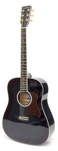

Настройка гитары
Настройка шестиструнной гитары
Самый быстрый способ настроить гитару,это использовать тюнер.Обычно тюнер включает в себя шесть звуков шести открытых струн гитары. Задача настройщика, чтоб звук издаваемый тюнером и гитарой звучали в унисон, т.е. были идентичными. Здесь нужен слух. При самостоятельной настройке гитары необходимо ориентироваться на то, что в унисон должны звучать:
Настройка двенадцатиструнной гитары
Строй 12-ти струнной гитары почти не отличается от стандартного строя акустической гитары. Только с тем отличием, что у 12-ти струнной гитары, имеется 6 пар струн 2-х видов: 6 обычных и 6 октавных струн. Чем тоньше струна, тем ее звучание на одну октаву выше, чем у ее пары.В итоге у нас получается:
Настройка электрогитары
Настройка электрогитары предполагает определенную высоту струн. Оптимальный зазор: - 1 струна: 1,5 мм; - 2 струна: 1,6 мм; - 3 струна: 1,7 мм; - 4 струна: 1,8 мм; - 5 струна: 1,9 мм; - 6 струна: 2,0 мм. Перед регулировкой высоты необходимо расслабить нити. Настройка электрогитары включает регулирование рабочей длины струны – мензуры. Если она не отрегулирована, то гитара будет фальшивить. Если мензура настроена правильно, то погрешность будет наиболее равномерной по всему грифу. Лучше настраивать мензуру с помощью тюнера или по флажолетам, которые над двадцатым ладом должны звучать, как зажатая струна на двенадцатом ладе. Если звук нити выше, то нужно увеличить мензуру, а если ниже – то уменьшить.